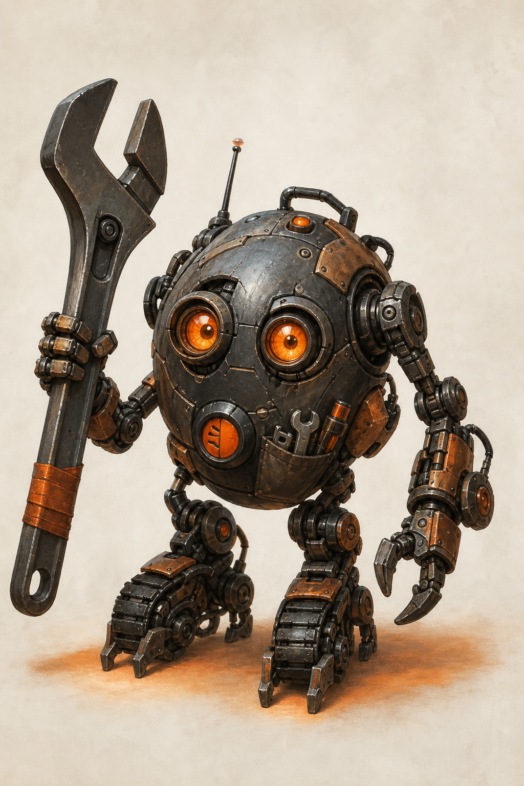

Interface Hub
Где живёт работа

Как выстроить путь менеджера в BPMSoft — от входа в рабочее место до списка клиентов, карточки клиента и связанных активностей?
Термины интерфейса
Соберите цепочку из пяти терминов
Арсенал
Термины BPMSoft
Выбирайте инструменты в порядке, в котором с ними встретится пользователь.
Результат
Первый город завершён
Архипелаг конфигурации освоен
Вы прошли девять заданий и собрали целостное решение BPMSoft: от интерфейса и данных до доступа, автоматизации и аналитики.
Новое достижение
Архитектор первого города
Вы связали шесть механизмов платформы в одну работающую систему обработки обращений.
Условия задания
Заполните все узлы перед пробным запуском.
Результат
Медный Предел синхронизирован
Сердце снова держит общий ритм
Девять производственных контуров работают как одна система. Цеха сохранили автономность, но теперь публикуют версии правил, следы выполнения и подтверждения общего выпуска.

Новое достижение
Синхронизатор Медного Предела
Вы восстановили работающую систему без разрушения её самостоятельных механизмов.
Контур синхронизирован. Не потому, что все его части стали одинаковыми, а потому, что каждая снова знает своё место в общей системе. — ГЕФЕСТ-7